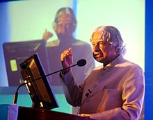

A. P. J. Abdul Kalam
Avul Pakir Jainulabdeen Abdul Kalam (15 October 1931 – 27 July 2015) was an
Indian aerospace scientist who served as the
11th president of India from 2002 to 2007. He was born and raised in
Rameswaram, Tamil Nadu and studied physics and
aerospace engineering. He spent the next four decades as a scientist and
science administrator, mainly at the Defence
Research and Development Organisation (DRDO) and Indian Space Research
Organisation (ISRO) and was intimately involved in
India's civilian space programme and military missile development efforts.
He thus came to be known as the Missile Man
of India for his work on the development of ballistic missile and launch
vehicle technology. He also played a
pivotal organisational, technical, and political role in India's Pokhran-II
nuclear tests in 1998, the first since the
original nuclear test by India in 1974.
Early life and Education

Avul Pakir Jainulabdeen Abdul Kalam was born on 15 October 1931 to a Tamil Muslim family in the pilgrimage centre of Rameswaram
on Pamban Island, then in the Madras Presidency and now in the State of Tamil Nadu. His father Jainulabdeen Marakayar was a boat
owner and imam of a local mosque and his mother Ashiamma was a housewife. His father owned a ferry that took Hindu pilgrims back
and forth between Rameswaram and the now uninhabited Dhanushkodi. Kalam was the youngest of four brothers and one sister in his
family. His ancestors had been wealthy Marakayar traders and landowners, with numerous properties and large tracts of land. Even
though his ancestors had been wealthy Marakayar traders, the family had lost most of its fortunes by the 1920s and was poverty-
stricken by the time Kalam was born.
In his school years, Kalam had average grades but was described as a bright and hardworking student who had a strong desire to learn.
He spent hours on his studies, especially mathematics.After completing his education at the Schwartz Higher Secondary School,
Ramanathapuram, Kalam went on to attend Saint Joseph's College, Tiruchirappalli, then affiliated with the University of Madras, from
where he graduated in physics in 1954.He moved to Madras in 1955 to study aerospace engineering in Madras Institute of Technology.
While Kalam was working on a senior class project, the Dean was dissatisfied with his lack of progress and threatened to revoke his
scholarship unless the project was finished within the next three days. Kalam met the deadline, impressing the Dean, who later said to
him, "I was putting you under stress and asking you to meet a difficult deadline". He narrowly missed achieving his dream of becoming
a fighter pilot, as he placed ninth in qualifiers, and only eight positions were available in the IAF.